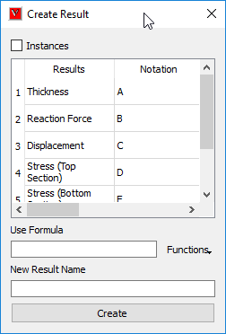
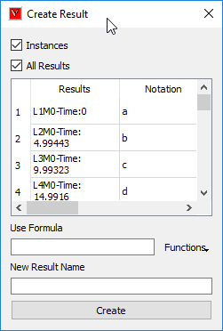
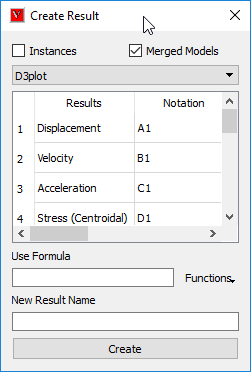

Create Result using Expression¶
This command helps user to create or generate a new CAE result from existing results.
User can compute or create a new CAE result for
Combining results.
Average of two or more results.
Difference between two results.
Summation of two derived results.
Scaled result, etc.
User has to provide an expression or formula with notations available with arithmetic operators. New result will have same number of instances as other results have.
Note
The computed new result will be updated to CAE | Result List immediately and user can view the result same as other results.
Complex results are not supported.
Create Result Panel

Instances |
Enables Instance Creation. |
Results |
Column header for existing Results. |
Notations |
Column header for notations. Simple Alphabet Notation which refers to the result in first column. Every result has its own unique alphabet notation. |
Result Type |
Column header which displays result type of corresponding result in first column. It Lists the types of result either Scalar or Vector or Tensor. An acronym in the bracket specifies if the result is of nodal or elemental or element nodal type. N, E and EN refers to nodal, elemental and element nodal respectively. |
Use Formula |
Enter an expression with arithmetic operators, notations and constants. |
New Result Name |
User has to provide a new name for new result. |
Create Result |
Evaluates the expression in the formula bar and pops up a message “Success” or an error message if any error occurs. |
Note
Non-Scalar type results (SixDOF, Vector and Tensor) are highlighted in blue color in the list.
Consequence of new result creation
Creation of new CAE result
A message will be popped up with message “New result is created and added successfully”.
New Result Name will be added to the CAE | Result List panel as well as this panel.
New Result contains same number instances as any other result have.
Mouse Click Events
Double click on a notation:
This event copies the notation clicked and pastes in the formula bar.
Right mouse click on a non-scalar result:
This event drops down a context menu
The context menu lists a set of derived result names based on the result type of selected CAE result.
The user selected derived result name will be added at the end of result list temporarily for computation.
The added derived result name is of the form, “Result Name - Derived result name” (Eg. Displacement-Translational Magnitude).
Notation and result type will be created automatically. But this is a temporary addition only.
User can use this notation for computation.
All the temporary derived result names will be cleared if the dialog is refreshed.
Context Menu for Six Degrees of Freedom result
{kind=link}
List of Operators
Addition
‘ + ‘
Subtraction
‘ - ‘
Multiply
‘ * ‘
Division
‘ / ‘
Open bracket
‘ ( ‘
Close bracket
‘ ) ‘
Cosine Functions
sin[ ], cos[ ], tan[ ], log[ ]
Square and Square root functions
sqr[ ], sqt[ ]/sqrt[ ]
Absolute Function
Abs()
Operands
Create result panel lists a set of notation for results which are automatically created. These notations can be used in the formula bar.
Notations will be in capital letters for result creation and in small letters for instance creation.
The valid operands are of,
Any alphabet notation which refers to a CAE result in the create result dialog.
Any constant expression like 233, 0.455.
Syntax for simple expression or formula
S.No |
Expression /Formula |
Description |
1 |
A+B |
Addition of Results A & B. |
2 |
A*B |
Multiplication of results A & B. |
3 |
A-B |
Subtraction result B from result A |
4 |
A/B |
Division by result B over result A. |
5 |
Sin[B] |
Sinusoidal result of result B. |
6 |
3*A or A*3 |
Scalar Multiplication of result A. |
7 |
A+((-B*C)/(2*D))*cos[B] |
A typical lengthy expression. |
8 |
-A |
unary minus ‘-‘ operation on result A |
9 |
A * (-B) |
Multiplication of result A and minus of result B. |
10 |
Abs(A+B) |
Sum the results A and B. compute absolute result of summed result. |
11 |
Sqr[A] |
computes the square for each component or derived scalar. |
12 |
Sqt[A] |
computes the square root for each component or derived scalar. |
Note
Function parameters should be inside the square brackets, i.e. [ ] for Sin, Cos, Tan, Sqr and Sqt funcitons.
Example
{kind=link}
{kind=link}
{kind=link}
How to add two results and create a new result?
It pops up ‘Create Result’ dialog.
Enter the notation for first result in the formula bar, Say ‘A’.
Enter the addition operation ‘+’.
Enter the corresponding notation for second result Say ‘B’. so the expression is ‘A+B’.
Enter a name for new result.
Click ‘Create Result’.
Wait for a message “Successfully created and added”.
Computed result will be added to ‘Result List’ dialog.
Error message will popup if there is improper expression.
It pops up ‘Result List’ dialog.
Click the new name appended to the list and
Interpret the results.
{kind=link}
{kind=link}
How to find and view the difference between two results?
(OR)
How to create a new result which refers the difference between two existing CAE results?
It pops up ‘Create Result’ dialog.
Enter the notation for first result in the formula bar, Say ‘A’.
Enter the subtraction operation ‘-‘.
Enter the corresponding notation for second result Say ‘B’. so the expression is ‘A-B’.
Enter a name for new result.
Click ‘Create Result’.
Wait for a message “New result is created and added successfully”.
Computed result will be added to ‘Result List ‘ dialog.
Error message will popup if there is improper expression.
It pops up ‘Result List’ dialog.
Click the new name appended to the list and
Interpret the results.
How to add or multiply a scalar value to the result?
It pops up ‘Create Result’ dialog.
Enter a constant, say ‘23’ or.
Enter the addition operation ‘+’ or multiplication operation ‘ * ‘.
Enter the corresponding notation for second result Say ‘B’. (like ‘23*B’).
Enter a name for new result.
Click ‘Create Result’.
Wait for a message “New result is created and added successfully”.
Computed result will be added to ‘Result List ‘ dialog.
Error message will popup if there is improper expression.
It pops up ‘Result List’ dialog.
Click the new name appended to the list and
Interpret the results.
How to divide a result by another one?
It pops up ‘Create Result’ dialog.
Enter the notation for first result in the formula bar, Say ‘A’.
Enter the addition operation ‘/’.
Enter the corresponding notation for second result Say ‘B’. so the expression is ‘A/B’.
Enter a name for new result.
Click ‘Create Result’.
Wait for a message “New result is created and added successfully”.
Computed result will be added to ‘CAE | Result List ‘ dialog.
Error message will popup if there is improper expression.
It pops up ‘Result List’ dialog.
Click the new name appended to the list and
Interpret the results.
Note
Users are recommended to take more care while handling the operator ‘/’, and make assure that divider is not zero.
if divider = 0, then it leads to in-appropriate results.
How to use sin or cosine functions in the formula?
It pops up ‘Create Result’ dialog.
User can either use functions for constant or a variable.
For example, Sin[0.23], Log[B], Cos[A-B].
Enter a name for new result.
Click ‘Create Result’.
Wait for a message “New result is created and added successfully”.
Computed result will be added to ‘CAE | Result List ‘ dialog.
Error message will popup if there is improper expression.
It pops up ‘Result List’ dialog.
Click the new name appended to the list and
Interpret the results.
Note
Function parameters should be inside the square brackets.
How to use absolute functions in the formula?
It pops up ‘Create Result’ dialog.
User can use either of the following syntax styles.
Abs(), ABS(), abs().
For example, Abs(A+0.5*B) or simply Abs(B).
Enter a name for new result.
Click ‘Create Result’.
Wait for a message “New result is created and added successfully”.
Computed result will be added to ‘CAE | Result List ‘ dialog.
Error message will popup if there is improper expression.
It pops up ‘Result List’ dialog.
Click the new name appended to the list and
Interpret the results.
Different cases of Result Creation
Case 1: Creating a new CAE result in a single model.
Load a cax model, which contains CAE data.
It pops up the panel as below,
Provide the expression or formula in the Use Formula text box.
Expression should be of meaningful with proper notations, operators and constants.
For example - “A+B/E”.
Provide a name for the new result.
Click ‘Create Result’.
It pops up a message box with any one of the following messages,
“New Result is created and added successfully” or “_Error! …..”
Case 2: Creating a new CAE instance in a single model.
Load a cax model, which contains CAE data.
It pops up the panel.
Check ‘Instances’ option. ‘All Results’ option will be enabled. 
User can create the new instance to current selected CAE result or all results.
This can be controlled by the option ‘All Results’
Provide the expression or formula in the Use Formula text box.
Expression should be of meaningful with notation alphabets, operators and constants.
For example - “2*a+3*b”
Provide a name for the new instance.
Click ‘Create Instance’.
It pops up a message box with any one of the following messages
“New Instance is created and added successfully” or “_Error! …..”
Case 3: Creating a new CAE result across merged models.
Load a cax model, which contains CAE data.
Merge one or more cax files or models.
It pops up the panel as below.
Check the option ‘Merged Models’, which opens a combo box of merged files as below, 
Notations changes accordingly with an extension of model number. ‘A1’ refers to the first result of model 1 and ‘B2’ refers to the second result of model 2.
User can create the new instance to current selected CAE result or all results.
This can be controlled by the option ‘All Results’.
Provide the expression or formula in the Use Formula text box.
Expression should be of meaningful with notation alphabets, operators and constants.
For example - “B2-B1”
Provide a name for the new result.
Click ‘Create Result’.
It pops up a message box with any one of the following messages
“New Result is created and added successfully”
“_Error! …..”
Examples